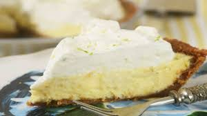

Kebabs

Easy Key Lime Pie
Traditional Key Lime Pie made with a light grahm cracker pie crust as well as light whipped cream.
What You'll Need
- 1 pre made grahm cracker pie crust
- 2 cans sweetened condensed milk
- Juice of 6 key limes
- The Zest of 3 of those limes
- Whipped topping
Steps
- Zest 3 limes
- Juice 6 limes into a mixing bowl
- Add in 2 cans sweetened condensed milk and lime zest
- Thorughly mix together
- Pour into pie crust
- Bake on 400 for 35 minutes
- Let rest 20 minutes
- Top with whipped topping
- Eat Up